Copepod IDs
This page will compile a visual guide to the species we’ve collected, including photographs and notes on identification. This is a work-in-progress example for the calanoid copepods of Lake Champlain - we could consider something similar.
Cyclopoids
Cyclops scutifer
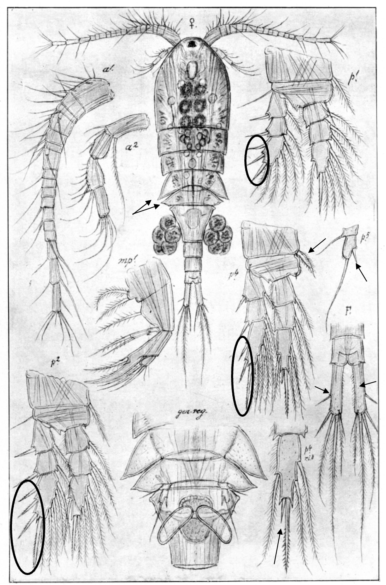
0.9‒1.6 mm; spine formula 3.4.3.3; pediger 4 and 5 with lateral wings; P4 coxal seta usually swollen; P4 enp3, apical spines very different in length; caudal rami short (l/w: 4.0‒5.0) and pilose; insertion of caudal seta II > 1/3 ramus length; P5. [Sars 1914-1918]
Cyclops vicinus
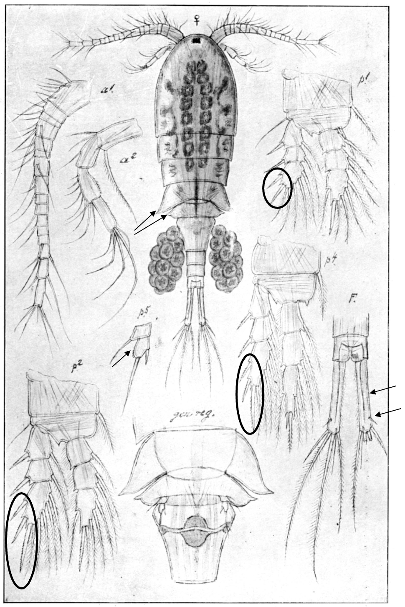
1.3‒2.3 mm; spine formula 2.3.3.3; pediger 4 and 5 with lateral wings; caudal rami long and pilose; insertion of caudal seta II < 1/3 ramus length; P5. [Sars 1914-1918]
Cyclops kolensis
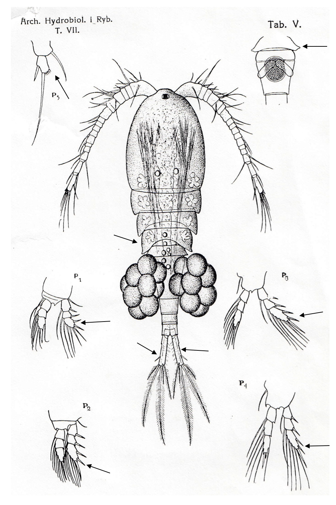
1.0‒1.3 mm; spine formula 2.3.3.3; pediger 4 and 5 without lateral wings; caudal rami short (l/w: 4.0‒5.0) and pilose; insertion of caudal seta II < 1/3 ramus length; P5. [Koźmiński 1933]
Megacyclops viridis
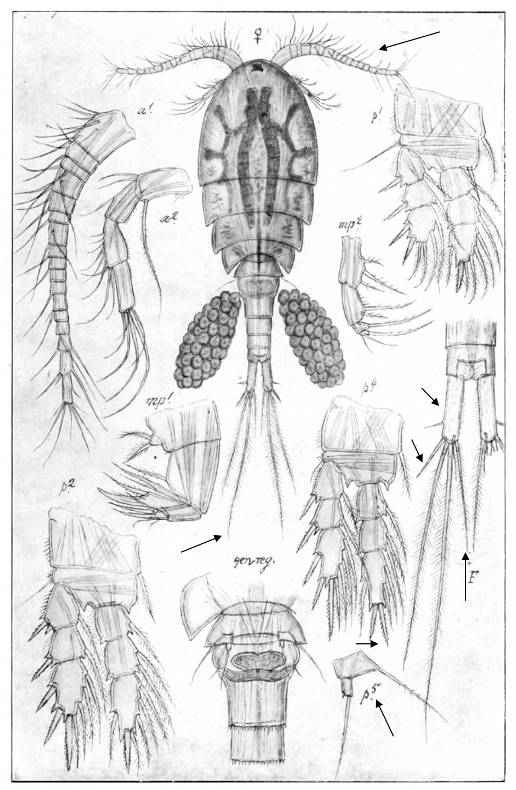
1.2‒2.1 mm; A1 short, not reaching beyond cephalothorax; spine formula 2.3.3.3; P4 enp3 apical spines subequal; caudal seta V long; caudal rami short and pilose; caudal seta VI / caudal seta III >2; P5. [Sars 1914-1918]
Megacyclops gigas
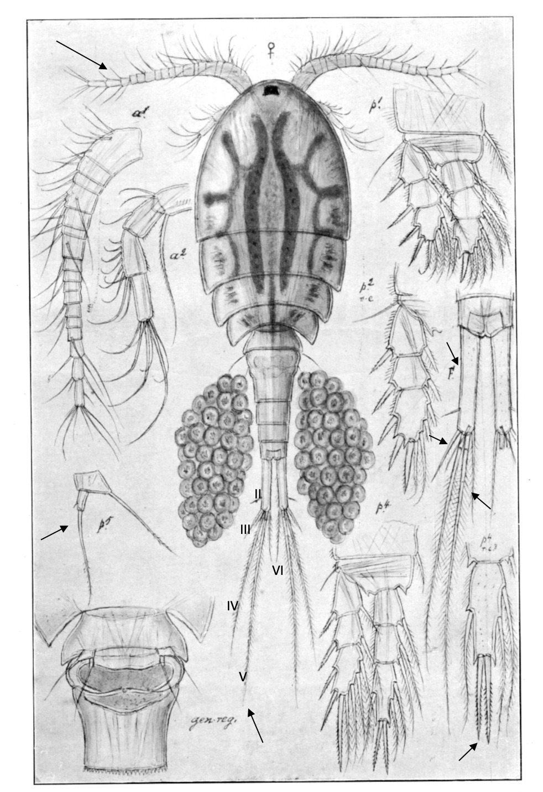
2.0‒3.5 mm; A1 short, not reaching beyond cephalothorax; spine formula 2.3.3.3; caudal seta V long; P4 enp3 apical spines subequal; caudal rami long and pilose; caudal seta VI / caudal seta III <2; P5. [Sars 1914-1918]
Macrocyclops albidus
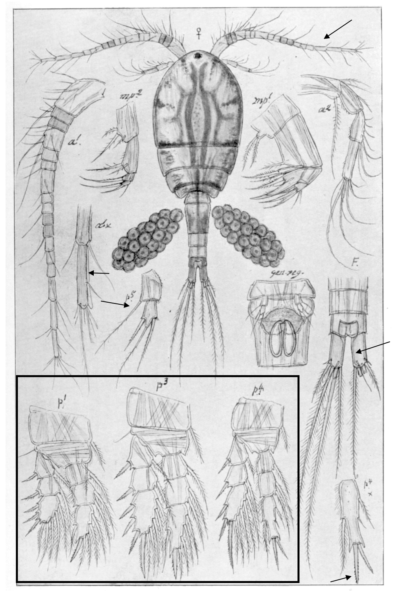
1.7‒2,5 mm; A1 beyond cephalothorax; A1 last segment with smooth hyaline membrane; spine formula 3.4.4.3; P4 enp3 apical spines subequal; caudal rami very short and medially naked; P5. [Sars 1914-1918]
Macrocyclops fuscus
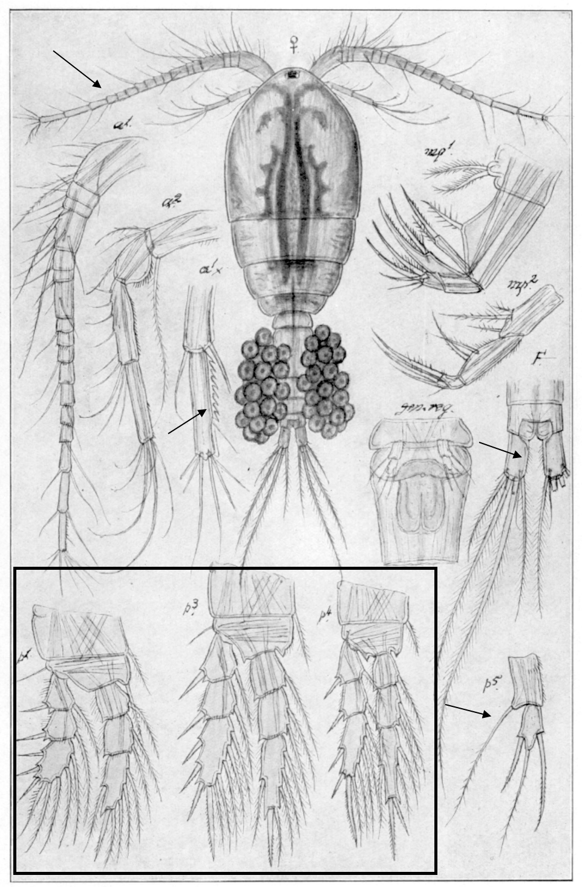
1.8‒2.4 mm, A1 beyond cephalothorax; A1 last segment, coarse dents on hyaline membrane; spine formula 3.4.4.3; caudal rami very short medially pilose; P5. [Sars 1914-1918]
Acanthocyclops trajani
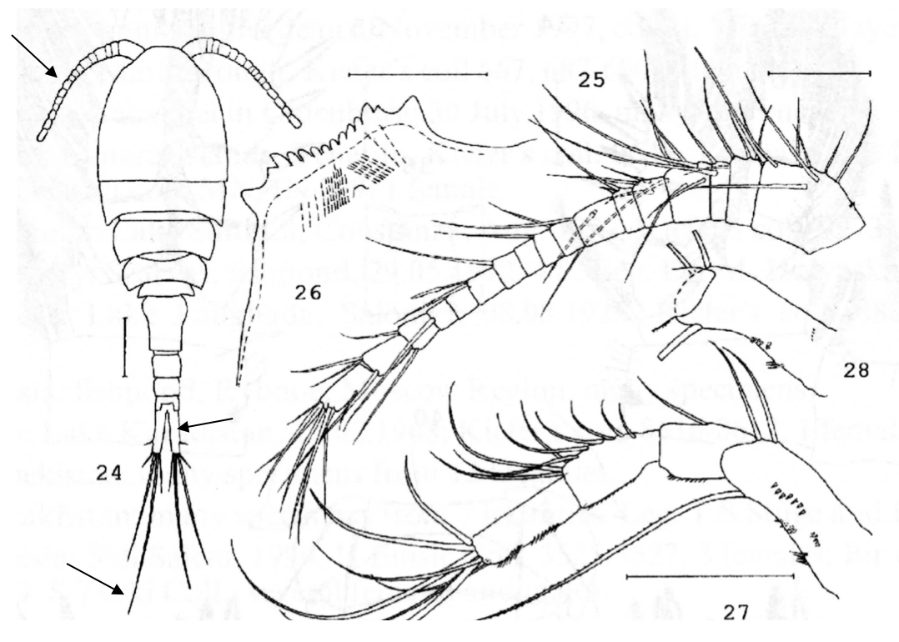
1.1‒1.6 mm; A1 not reaching beyond cephalothorax; spine formula 3.4.4.4; caudal seta V long; caudal rami length/width 4.0‒6.0, medially naked. [Mirabdullayev & Defaye, 2002]
Mesocyclops leuckarti
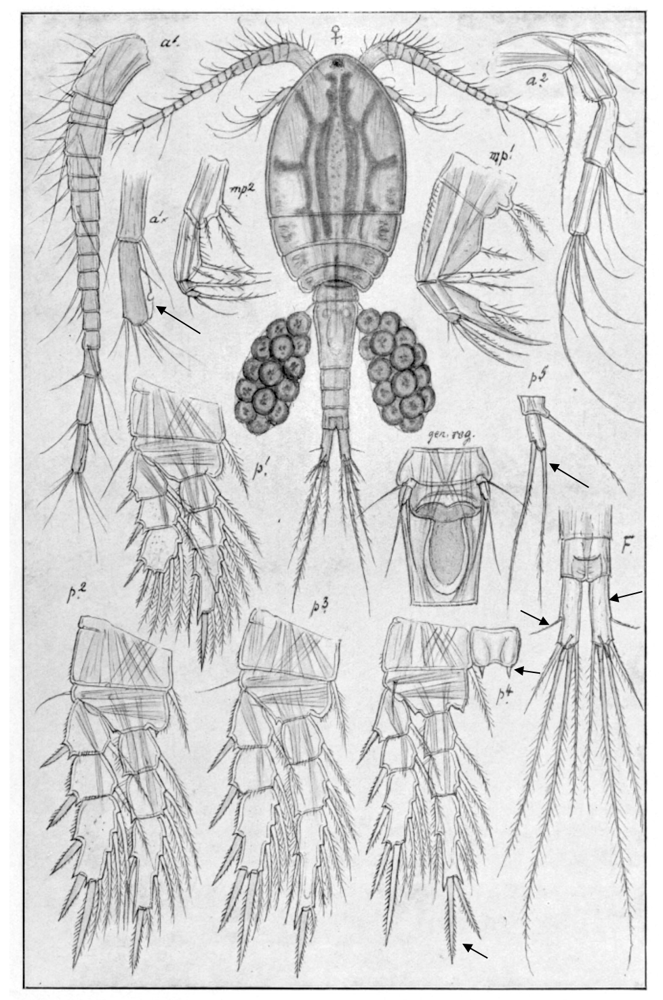
0.9‒1.5 mm; A1 17th (last) segment, hyaline membrane with notch; caudal rami short, lateral seta long; spine formula 2.3.3.3; P4 enp3 apical spines subequal; P4 coupler with acute outgrowth; P5. [Sars 1914-1918]
Thermocyclops crassus
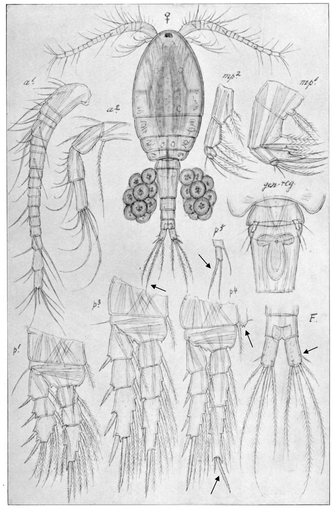
0.9‒1.1 mm; caudal rami short; caudal seta V short and with curly tip; spine formula 2.3.3.3; P4 enp3 apical spines, in/out ca 2.0; P4 coupler with obtuse outgrowths bearing spinules; P5. [Sars 1914-1918]
Diacyclops bicuspidatus
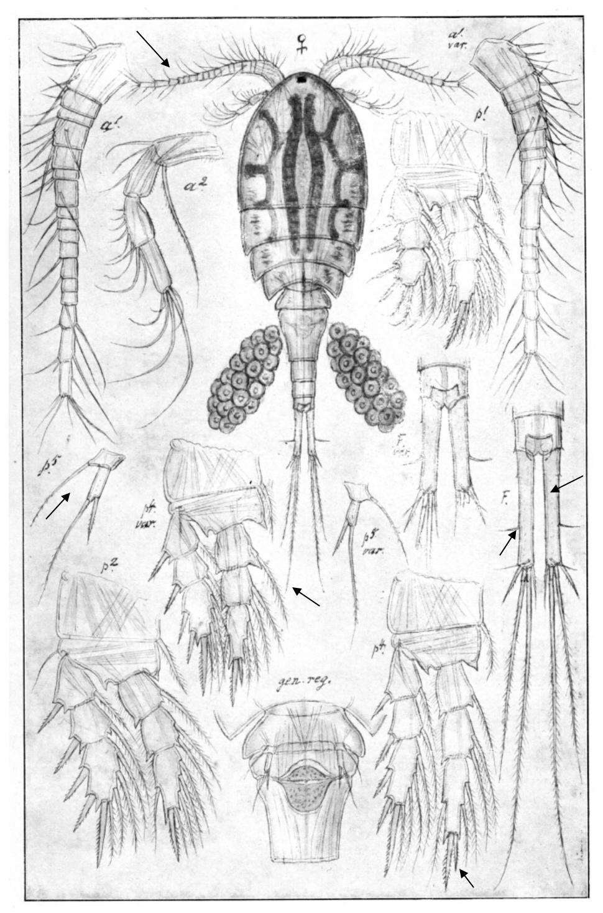
0.8‒1.6 mm; A1 not reaching beyond cephalothorax; caudal rami long, seta II (lateral) inserted at posterior 1/3; caudal seta V long; spine formula 2.3.3.3; P4 enp3, of apical spines inner one shorter; P4 coupler without outgrowths; P5. [Sars 1914-1918]
Thermocyclops oithonoides
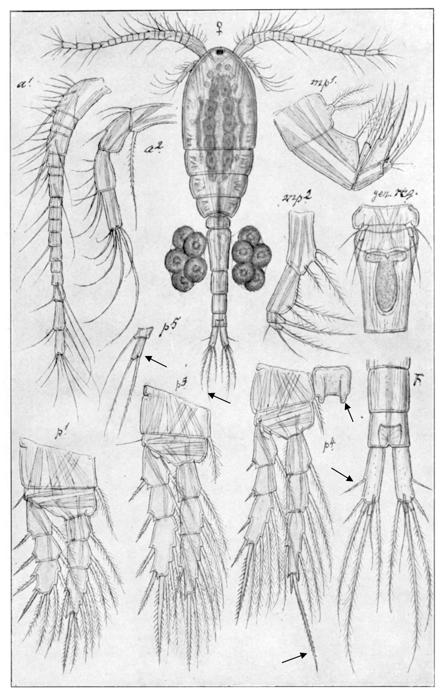
0.8‒1.0 mm; caudal rami short, caudal seta II (lateral) long; caudal seta V short, tip not curling; spine formula 2.3.3.3; P4 enp3 apical spines, in/out ca 3.0‒4.0; P4 coupler with high outgrowths bearing spinules; P5. [Sars 1914-1918]
Calanoids
Limnocalanus macrurus
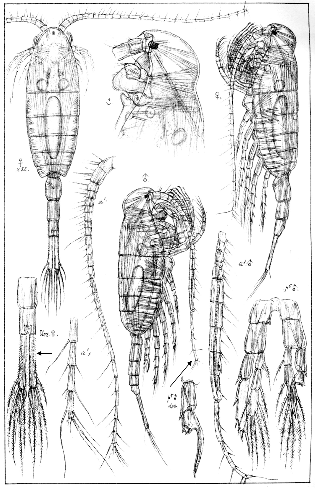
2.0‒3.0 mm, P1‒P4 enp three-segmented, caudal rami long, both lateral and medial margin pilose; antennule reaching beyond prosome. [Sars 1914-1918]
Heterocope appendiculata
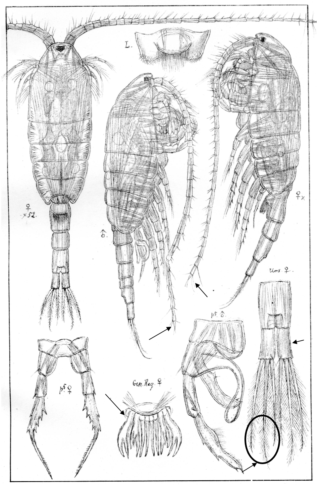
2.0‒2.2 mm; caudal rami short with 3-3 terminal setae; P1‒P4 enp one-segmented; female genital plate with finger-like lobes; antennule reaching beyond caudal rami. [Sars 1914-1918]
Eurytemora velox
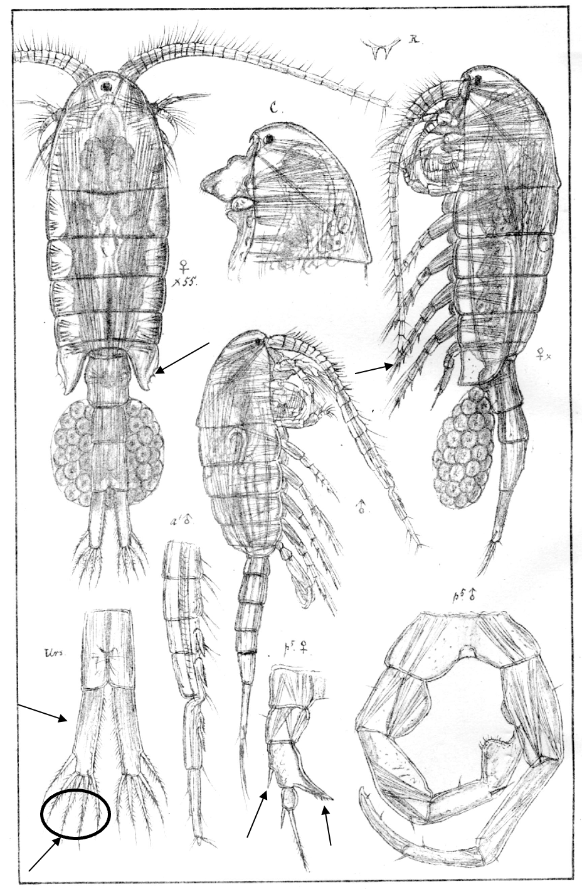
1.3‒2.2 mm; P2‒P4 enp two-segmented; A1 reaching posterior end of prosome; caudal rami long with 4 terminal setae; female pediger 5, lateral wings broad/irregular shape; female P5: exp1 with 1 lateral spine, and inner outgrowth posteriorly directed. [Sars 1914-1918]
Eurytemora lacustris
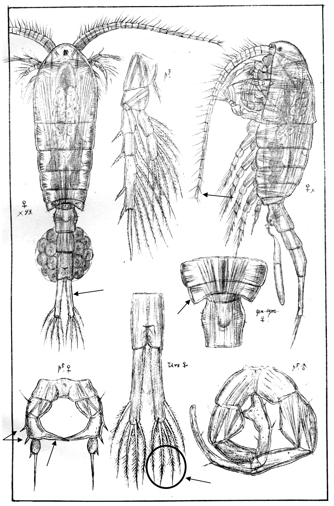
1.0‒1.5 mm; A1 reaching posterior end of prosome; P2‒P4 enp two-segmented; caudal rami long, with 4 terminal setae; female, pediger 5 without lateral wings; female P5, exp1 with 2 lateral spines, and inner outgrowth medially directed. [Sars 1914-1918]
Eurytemora carolleeae
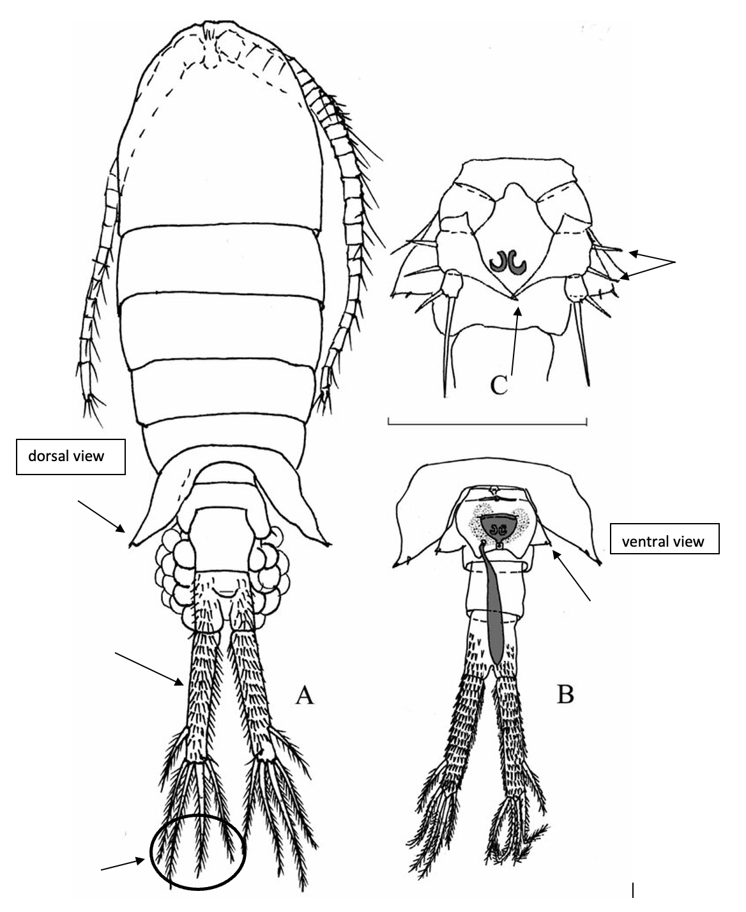
ca 1.2 mm; P2‒P4 enp two-segmented; caudal rami long, with 4 terminal setae; female pediger 5, lateral wings triangular, posteriorly directed; female genital somite with wing-like outgrowth; female P5, exp1 with 2 lateral spines, and inner outgrowth posteriorly directed. [Alekseev & Souissi 2011]
Additional notes on Eurytemora species
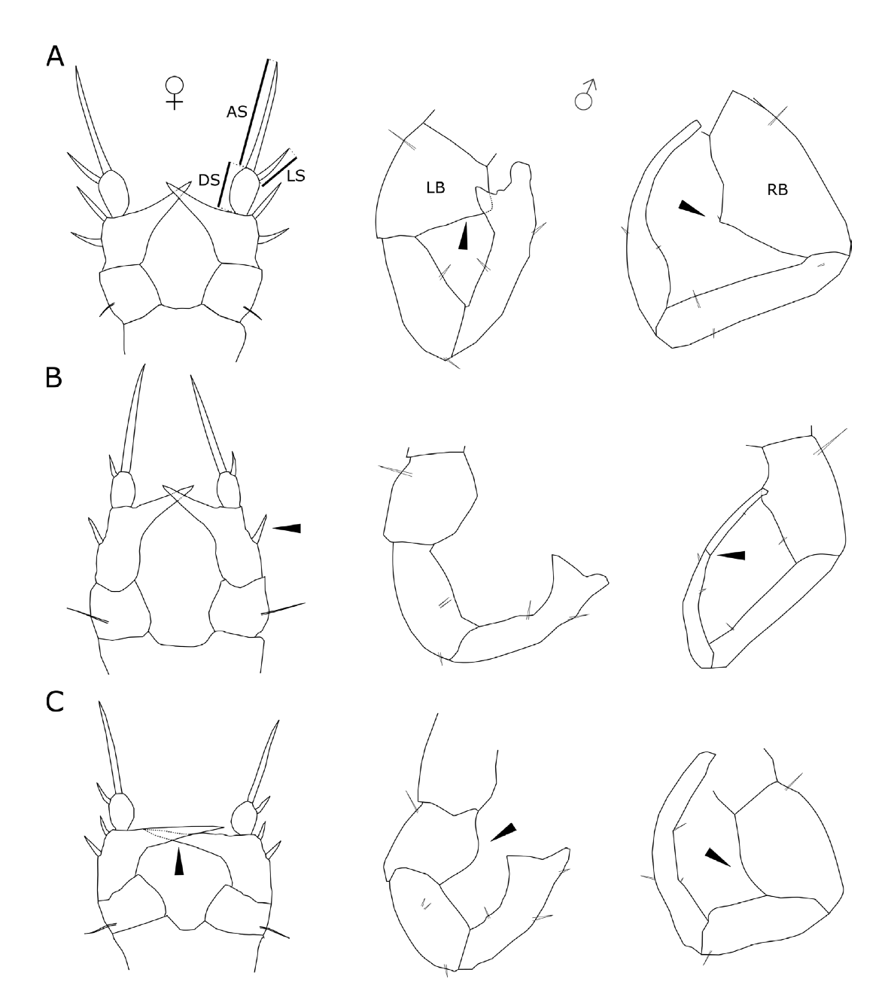
Fifth pair of legs of related Eurytemora species (A) E. affinis(B) E. velox(C) E. lacustris. Abbreviations: AS – apical seta, DS – distal segment, LS – lateral spine, LB – left basipod, RB – right basipod. Arrows indicate important characteristics of fifth pair of legs. [Sługocki et al 2019]
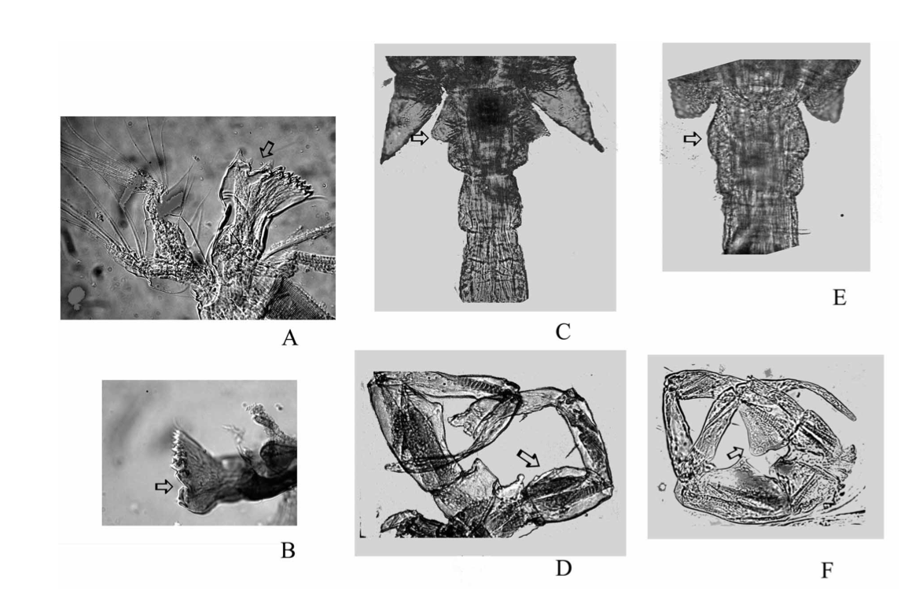
Eurytemora carolleeae sp. nov. (A–D) and E. affinis (Poppe, 1880) (E–F): A, female mandible, arrow indicating a gap; B, male mandible, arrow indicating a gap; C, female genital somite with wing-like outgrowth; D, male leg 5 with arrow indicating left basipod; E, female genital somite without wing-like outgrowth; F, male P5, arrow indicating left basipod. (Photo: Mrs Natalia Sukhikh) [Alekseev & Souissi 2011]
Eudiaptomus graciloides
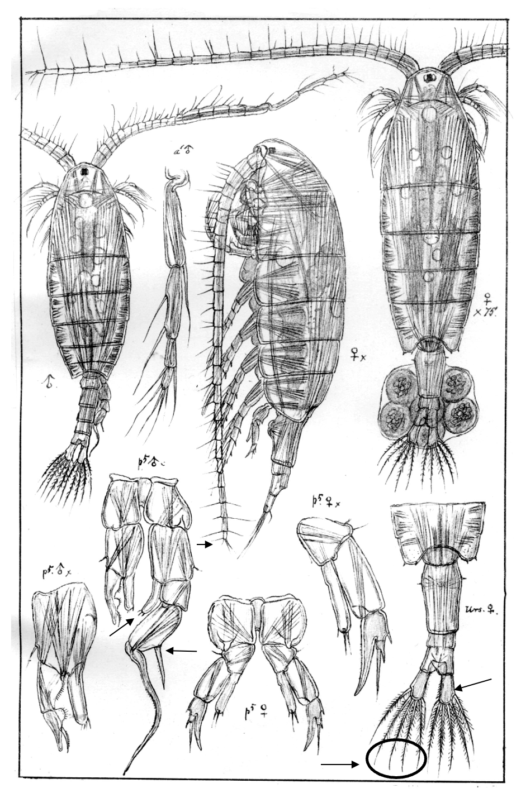
1.0‒1.5 mm; P2‒P4 enp three-segmented; caudal rami short, with 4 terminal setae; antennule reaching beyond caudal rami; male, right P5: enp slender, and exp2 lateral spine in distal half of segment. [Sars 1914-1918]
Eudiaptomus gracilis
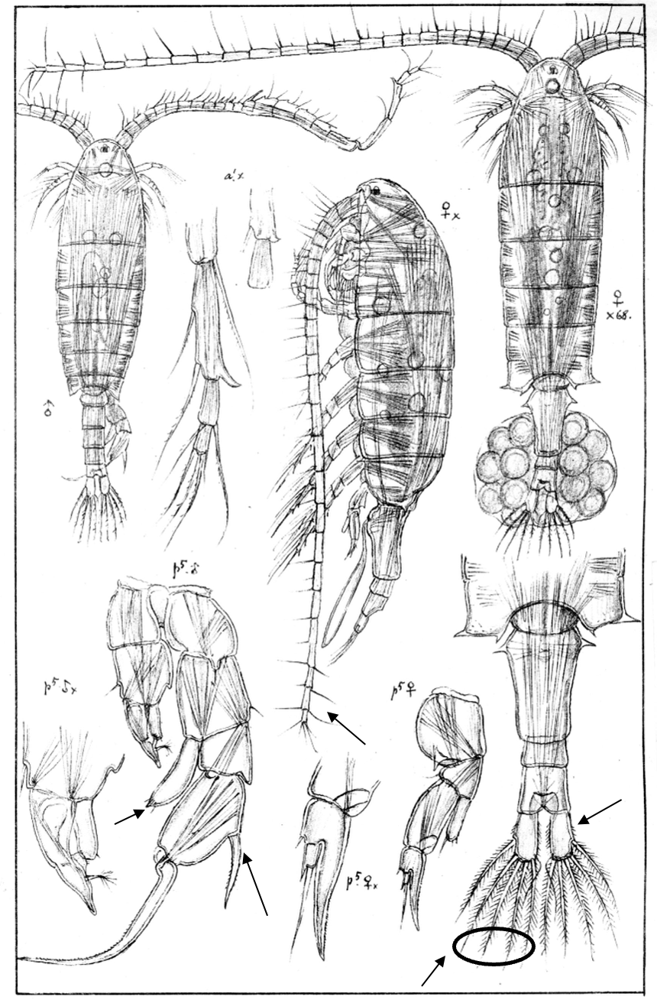
1.0‒2.0 mm; P2‒P4 enp three-segmented; caudal rami short, with 4 terminal setae; antennule beyond caudal rami; male, right P5: enp large, and exp2 lateral spine in proximal half/middle of segment. [Sars 1914- 1918]